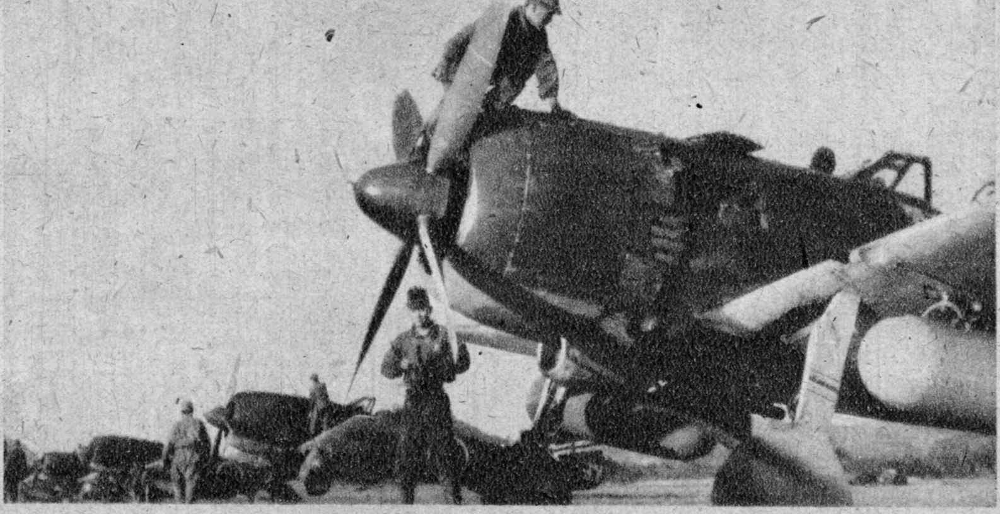
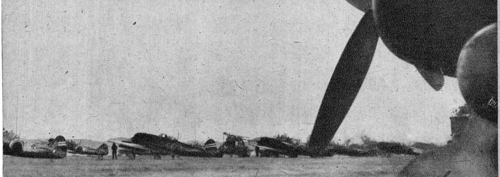
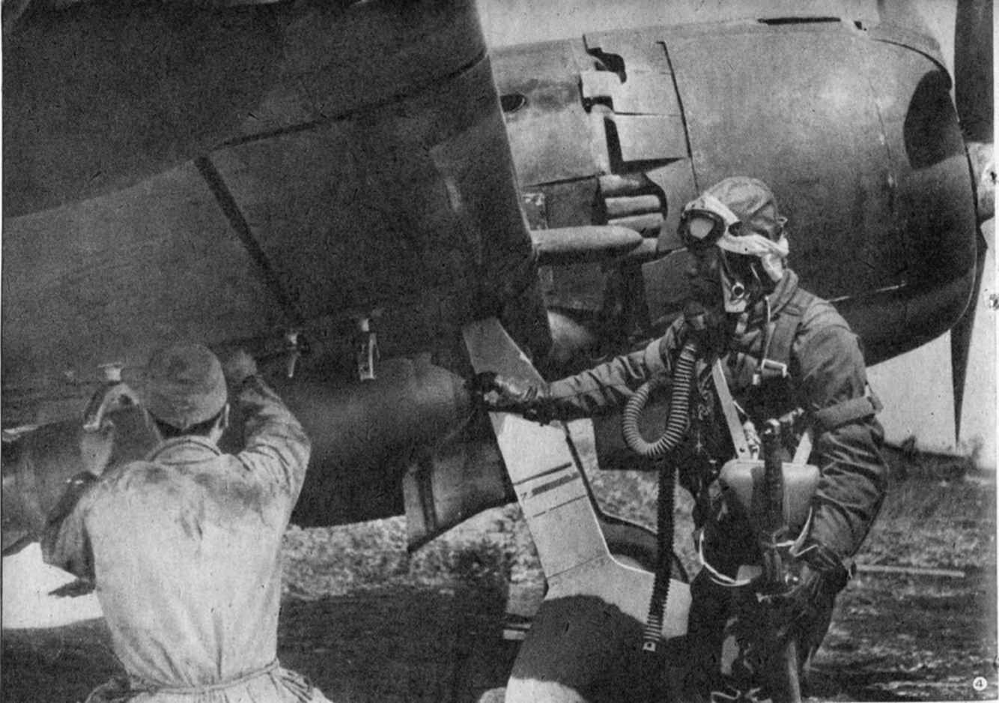
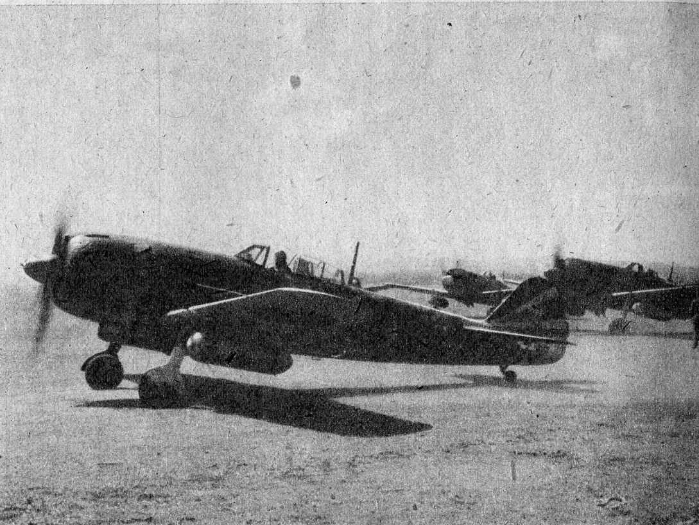

| 「疾風 襲撃隊」 ・・・敵秘匿基地を攻撃せよ・・・ （横書き） eXism Short Magazine | |
| ワクロー3 | |
| (2015) | |
疾風 襲撃隊
・・・敵秘匿基地を攻撃せよ・・・
- 著 者
- ワクロー３

序章
炎天下に俺は歩く
平成十七年の八月。炎天下、こんな年寄りが杖を頼りに一人で歩いている。手を挙げてもタクシーは停まってくれない。
どうせ乗せたとしても近距離。乗せるだけ、乗り降りを介助せねばならず、運転席を降りる手間がかかる。たいして稼ぎにもならない。無視するに限る。運転手は、みんな、そう思って、俺の傍らを通り過ぎてゆくのだろう。
立ち止まっては息をつき、歩いては立ち止まる。
だめでもともと。立ち止まって振り返り、車道の向こう側から近づいてくるタクシーに、もう一度だけ手を挙げてみる。
でも、今度も無視された。仕方がない。俺は、あきらめて最後の坂を、杖をついて登る。これを登れば、会場まで平坦な直線が残っているだけだ。
いつものように孫娘に車で送ってもらうわけには行かなかった。
だからといって、家からここまで、タクシーを乗り通せるほど豊かな生活ではない。
電車と地下鉄を乗り継いで来た。一人だけの外出は、何年ぶりだろう。
どうしても一人で行かねばならなかった。
六十年前、彼らが体験した、たった一日間の出来事を思い出しながら。俺は歩き続けた。
新飛行団長
下された無謀な命令
午前中の出撃から戻った沼橋覚璽大尉は、呼び出されて本部に出頭するところだった。
沼橋大尉の戦隊は、今朝から二度出撃している。午前六時、敵飛行場を襲撃するために一度。午前十時過ぎ、今度は敵襲と聞いて迎撃に飛び立った。
短時間に二度も出撃すると、正直、体がきつい。部下たちは、二度目の出撃から戻るなり、床に這うようにして疲れた体を休めていた。
それを「たるんでいる」と叱責したのが、着任したばかりの第３１飛行団長・野間信武大佐だった。
「なにしろ、飛べない飛行団長殿だ。内地から来て、訳が解らんだけだろう。俺も一緒に言ってやろう」
整備中隊長の栗田兼男大尉が、沼橋に同行を申し出る。沼橋は、栗田を見て言った。
「栗田大尉。呼ばれたのは俺だから、貴様まで来たら、また文句を言われるぞ」
「なに構うものか。砲兵あがりのあの男に、少しは飛行機のことを分からせないと、この先、思いやられる」
栗田は強引に、司令官室についてゆく。
「沼橋大尉、入ります」
「栗田大尉、入ります」
「よしっ。入れ」
野間大佐は、立ってこちらを睨んでいた。
「栗田大尉。何の用か。俺は貴様は呼んでおらん」
野間大佐は、いきなり厳しい口調で栗田に言うと、その勢いで沼橋を怒鳴り上げた。
「司令官が入ってきたのに、部下に敬礼もさせず、床に寝転がったままとは、何事だ。飛行気乗りは、そんなに偉いのか！俺は許さん」
沼橋を制して、栗田が答える。
「栗田が理由を述べます。沼橋大尉の戦隊は、朝から二度...」
「黙れ！貴様に発言は求めとらん。許可なく話すなっ。沼橋に問うておるのだ」
沼橋は、怒りを抑えて答えた。
「寝転がりたくて寝ているのではありません。おわり」
「答えになっとらん」
「空中戦となれば、旋回や降下のたびに重力加速度が肉体に加わり、血流...もとい、体中の血が逆流します。地上に降りても、肉体を酷使した体は、急には元に戻りません。おわり」
「戦果もなく戻ってきて、何が空中戦か。敵機の一機でも落としてからものを言え」
栗田が、たまらず口を挟んだ。
「沼橋大尉は、公認撃墜だけで五十機。ここに来てから三十機を撃墜し、二度の武功賞を受けた男です。飛行団長のお言葉とはいえ、あまりです」
「貴様、誰の許可で発言しとるのか。武功賞だと。俺の前で戦果もなしに、過去の武功などなきに等しいと思え！」
野間大佐が着任して一週間。確かに戦果はなかった。三日間、悪天候で出撃できず、その後も敵飛行場を攻撃しにゆくが、ことごとく空振りしていたからだ。
中国大陸の戦いは、敵味方ともに、地上から相手の出撃が目視できる。離陸と同時に情報が敵にも伝わり、敵飛行場を埋めている爆撃機は退避する。逆に、敵が我が飛行場の空襲のために離陸すると、その情報は、こちらにも伝わる。爆撃機は退避する。その繰り返しだった。今朝も同じだった。
着任以来、戦果がない。野間大佐には、沼橋らが「闘志が不足している」とでも思ったのだろう。
砲兵の経歴しかない野間大佐が、異例にも飛行団長として戦地にやってきた。他の飛行団では、団長自身が歴戦の勇士である場合も多い。その場合、指揮官として率先、出撃を続ける場合もある。
野間大佐のように人事の都合で「飛べない飛行団長」が来ることもある。その場合、指揮官として二つのタイプに分かれる。現場を知らないので、部下に実際を任せる人間。現場を知らない屈辱の反動で居丈高に威張り散らす人間。野間大佐は、間違いなく後者だった。しかも、始末が悪いことに、出世志向が強い。「自分の着任によって劇的に戦果が増えた」という実績が欲しいのだった。
野間大佐が、下した無理な命令も、そういう利己的な功名心の焦りから出たものだった。

基地の備え
輸送機の同行を求める
野間大佐は、西村参謀を呼びつけて、西村参謀から沼橋に新たな任務を命令した。
西村参謀は、野間大佐の傍らに立つと、沼橋に命令した。
「本日正午ごろ、陝西省の敵基地から爆撃機六十機が出撃したとの情報あり。敵の爆撃目標は、北九州の八幡市と推測せらる。飛行第２４９戦隊は、一時、第８航空軍の指揮下に入り、陝西省・楡林飛行場に進出。帰還する敵爆撃機編隊を撃滅せよ」
無茶だ。沼橋は即座にそう思った。
しかも、一時的に第８航空軍指揮下に入るとは、どういうことなのか。
ここから楡林飛行場まで片道六百キロある。会敵するためには、飛んでいってそのまま哨戒するしかない。会敵し損なうかもしれないが、いったん基地に着陸して燃料補給する可能性も考える必要がある。選択肢も多いのだ。
また落下増槽をつけて、哨戒しながら、燃料ぎりぎりまで飛行しつつ、北支那のどこかの敵基地に戻る爆撃機編隊を捕捉するためには、敵の正確な帰路がどこなのか、判断材料が乏しく、空振りする可能性が高い。
沼橋は、そう考えて、野間大佐の叱責を承知で発言した。
「敵編隊の飛行進路は、予測しているのでしょうか」
野間大佐は、ただちに反応した。
「予測？予測するのは、貴様らの任務だ」
「敵編隊が、どの飛行場に向うのか。その手がかりがないと、空中で会敵する可能性は、とても小さくなります。迎撃場所が、基地から近ければ修正もききます。楡林基地までは六百キロ。修正できる範囲ではありません」
「俺は貴様の意見を聞いているのではない。命令しておるのだ。出撃しろ」
傍らで聞いていた栗田が口を挟む。栗田は、野間飛行団長が理解できるように、言葉を選びながら発言した。
「戦隊が出撃するのであれば、楡林基地まで輸送機を出して、整備中隊が同行する必要があります」
野間大佐が癇癪を爆発させた。
「その必要はない。整備兵は、楡林基地にもおるはずだ」
栗田は、冷静に答えた。
「９１オクタンの燃料は、楡林基地にあるでしょうか。２０ミリ機関砲弾も十分に補給する必要があります」
野間大佐は、専門外のことを問われて、傍らの西村参謀を見た。
「どういうことか、参謀」
西村参謀は、さすがに答えざるを得なかった。
「四式戦闘機には、高性能の燃料と専用のオイルが必要です。燃料効率をあげるメタノール液の準備もいります。二十ミリ機関砲弾も補充することになります。楡林基地には一式戦・隼用の準備しかありません。誉エンジン...発動機の整備のために、四式戦の扱いに慣れた整備兵が必要です。楡林基地での燃料補給の可能性もあります。、楡林基地にはいずれも備えがありません」
野間大佐は、仕方なく答えた。
「では、整備中隊も輸送機で同行せよ！沼橋、命令を復唱せよ」
沼橋は、条件反射のように答えた。
「飛行第２４９戦隊は、楡林基地に進出し、一時、第８航空軍指揮下に入り、陝西省奥地の敵飛行場に戻る敵爆撃機編隊を撃滅します」
「よしっ！行け」
沼橋と栗田は敬礼して司令部を退出した。
会敵する確率が低く、戦果をあげる可能性が乏しい、無謀な命令だった。
だが命令された以上、実行するしかない。
全力の出撃
六百キロ先の基地目指す
沼橋の戦隊は、午前中に出撃した疲労が回復しないまま、全力二十機で離陸することになった。
列線に並んだ四式戦闘機「疾風」。全機が落下増槽を着けている。
栗田らの整備中隊も九六式爆撃機を転用した輸送機２機に、四式戦に必要な、９１オクタン燃料や銃弾、工具などを満載して同行する。
午後２時、沼橋戦隊長の四式戦闘機と、沼橋戦隊長の相棒、川原剛史伍長の機が、基地の滑走路を走り、離陸する。二機は二千馬力発動機「誉」の力強い牽引によって、みるみる上昇する。続いて、整備兵と燃料を載せた輸送機二機が離陸した。さらに残る十八機の四式戦闘機が、砂塵を巻き上げながら次々と離陸する。
やがて基地上空で、二十機の四式戦闘機と、二機の輸送機は、編隊を組んで一路、六百キロ北にある楡林基地を目指して飛行した。
目的地上空まで二時間。輸送機を先に楡林基地に向けて、沼橋の戦隊は、敵爆撃機が戻ってくると思われる空域を哨戒飛行する。だが、敵情報は、あまりにも少なく、新たな情報が追加されることもなかった。
「高度六千メートルを維持せよ」
敵爆撃機は姿を現さない。燃料も乏しくなったので、沼橋は、全機を楡林基地に着陸させる。基地で燃料を補給して再出撃するしかない。
狭い楡林基地は、河川に沿った場所にあり、滑走路が一本しかない。もともと所在している一式戦「隼」部隊が、二十機ばかりいる。さらに、沼橋の四式戦部隊と、輸送機二機が着陸したので、飛行機だらけになった。
沼橋は、基地司令官に面会し、そこで初めて、早朝の敵爆撃機の情報は誤報で、取り消しを連絡しようにも、無線の状態が悪く、「飛行２４９戦隊の出撃中止の進言が間に合わなかった」と伝えられた。
「２４９戦隊が来るという命令は受けた。だが、２４９戦隊が第８航空軍の指揮下に入るという命令は、届いておらん」
楡林基地の司令官は、沼橋に伝えた。
沼橋は、楡林基地に頼んで、満州の第８航空軍司令部に連絡を取ってもらうが、これも不通だった。沼橋に命令した原隊の野間大佐にも連絡がつかなかった。
「困ったな、どことも連絡が取れない」
沼橋は、あらためて味方飛行機がぎっしりと並んだ滑走路を見た。整備兵たちが、沼橋らの四式戦闘機に、燃料を補給している。
「一刻も早く、離陸しないと。敵がやってきたら、地上で全滅だ」
楡林基地は敵飛行場との距離も近い。その気になれば、敵基地から三十分前後でこちらの基地に殺到することができる。
上級指揮官と連絡がつかない以上、自分で決めるしかなかった。沼橋は、命令を待たずに離陸と帰還を決めた。
「燃料は念のために置いておこう。また来るかも知れないからな」
沼橋は、整備中隊長の栗田に頼んで、輸送機で持ってきた９１オクタン燃料のドラム缶すべて、メタノール液、専用オイルと、２０ミリ機関砲弾も置いて行くことにした。
敵編隊見ゆ
基地に引き返し大量撃墜
上空警戒のために沼橋の戦隊は先に離陸して、飛行場の上空を旋回する。整備兵を乗せた輸送機が続いて離陸。全機がそろって、帰路についた。
早朝からの飛行時間は六時間を越えている。これから基地に戻るために二時間。正直なところ、くたくただった。
戦隊は、輸送機を連れているので、周囲を警戒しながら進む。しばらくすると、沼橋の隣を飛ぶ川原伍長が、無線で伝えてきた。
「右九十度。高度四千メートルに敵編隊見ゆ。およそ三十機」
沼橋が機体を右に傾けて下を見ると、黒く小さな点が通り過ぎて行く。楡林基地に多数の日本軍機がいたことが敵に伝わり、さっそく銃爆撃に向ったらしい。あのまま留まっていたら悲惨なことになっただろう。沼橋の判断は正しく、間一髪で全滅を免れたというわけだ。
沼橋は、輸送機を丸腰にするわけには行かないので、大部分を輸送機とともに帰還飛行を続け、戦隊の一部だけ、楡林基地に引き返して、攻撃に振り向けることにした。
「第１、第２小隊は、楡林基地に引き返す。今の敵を攻撃する。第３、第４、第５小隊は、輸送機を護衛して帰投せよ」
沼橋と川原伍長、安藤少尉と塚原軍曹の２組のペアが、楡林基地の攻撃に向う敵編隊についてゆくことになった。
敵はおそらく気がついていない。
三十機の敵編隊は、Ｐ４７ばかりだ。敵編隊は、爆撃するためだろう。高度四千メートルを時速四百キロくらいの抑えた速度で、楡林基地に迫っていた。基地の一式戦の部隊が気がついていればよいが、気がつかなければ、列線に並ぶ友軍機が一方的に撃破されてしまう。
沼橋は、次第に高度を下げながら、全速で追いかけて、敵編隊に迫った。敵の位置から見れば、太陽のかなたから、沼橋たちが襲い掛かることになる。理想的な攻撃だ。
身軽になるために襲撃直前で増槽を捨てる。後続の三機も増槽を捨てた。
「帰りの燃料がぎりぎりになるな」
沼橋は、そう思いながら四式戦の高度をさげてゆく。敵は、まだ気がついていない。おそらく楡林基地への爆撃進路に入ることに集中していたせいだろう。
四機の四式戦は、楡林基地が視界に入る空域で、敵編隊を完全に捕らえる。
敵味方の速度差は、百キロに近い。みるみる距離を詰める。地上の友軍が、あわてて離陸しようと一式戦を滑走路に移動する光景が、背景画のように見える。だが。それは一瞬のことで、沼橋の視界には、三式射撃照準器いっぱいに広がる敵の尾翼以外は見えなくなった。
衝突寸前まで肉薄して、機首の２０ミリ機関砲を撃つ。爆撃姿勢に入っていた敵機は、四散して視界から消え、続く別の一機が三式射撃照準器からもはみ出て、視界いっぱいに広がる。
そこからは、射撃、射撃、射撃だった。敵編隊の航路が変らないので連射し続けた。後続の安藤少尉機も、撃ちまくった。
沼橋たちが一航過したときに、敵機の五機以上が墜落し、数機が黒煙を吐いている。
背後から襲われた敵は、爆弾を捨てて、逃走するしかなかった。
今や敵編隊は、ばらばらになって逃げ散り、それを楡林基地から飛び立った一式戦が追う。
「残敵掃蕩は、一式戦に任せよう。引き揚げるぞ」
鮮やかな一撃離脱だった。
沼橋は、四式戦の重い操縦桿を引いて旋回すると、楡林基地上空をあとにして帰路についた。
増槽を捨てているので、基地に戻るまで燃料を節約する必要がある。

五機を撃墜
戦果報告を叱責で迎える
途中、基地から無線が入るが、感度が悪く交信できなかった。
四式戦闘機の無線は、一式戦時代のものと比較にならないほど優秀だったが、この日は、終日通じて各基地との感度が不良で通信がほとんどできなかった。
「２４９戦隊。感なし。感なし」
沼橋は、途中も何度か基地を呼ぶが応答はなかった。
午後５時過ぎ、沼橋は基地上空に達した。
陽は西に傾き、山々が深い陰影を帯びて夜の接近を伝えている。
早朝から夕暮れまで、飛行につぐ飛行だったが、楡林基地上空で敵を大量撃墜して久しぶりに溜飲をさげた。およそ一週間ぶりの戦果だ。
高度を下げて行くと、基地の誘導灯が点灯された。沼橋は高度を落として着陸態勢に入る。
戦闘飛行したせいで燃料を激しく消費し、燃料計の残量がほとんどない。沼橋は、四式戦を着陸させると、機体を滑走路の脇に移動して停めた。先に戻っていた栗田が駆け寄ってくる。
風防をあけて上体を乗り出すと、栗田が声をかけた。
「やったか？」
「やった。五機だ」
「おめでとう。おつかれさん」
栗田は笑顔で沼橋を祝福したが続いて、冷めた表情になって、野間大佐の言葉を伝えた。
「砲兵野郎が、訳が分からんことを言っている。早く、やつのところに行ったがいいぞ。俺も、すぐに押しかける」
沼橋は司令部に出頭する前に、待機所の部下に声をかけた。
「ご苦労だった。あれから楡林基地上空で敵編隊を攻撃して五機撃墜した」
部下から歓声があがる。
「きょうは、ゆっくり休め！」
沼橋は、そう告げると、疲れた体をひきずって、司令部に出頭した。
野間大佐は、窓越しの日没する夕陽を浴びながら、不快な表情で沼橋を迎えた。
沼橋は、形式どおりに報告する。
「飛行第２４９戦隊は、楡林基地に進出、敵爆撃機編隊を迎撃せんとするも会敵できず、帰路、楡林基地攻撃に向う敵編隊三十機を発見、これを追撃交戦し、戦闘機五機を撃墜、二機を撃破。我が方に損害なし。報告終わり」
野間大佐は、撃墜戦果をほめるでもねぎらうでもなく、不快をにじませて沼橋を詰問した。
「２４９戦隊は、第８航空軍の指揮下に入ると命令したはずだ。なぜ無断で帰投したか！」
「第８航空軍とは連絡できませんでした」
「バカ者！第８航空軍司令官の中本中将閣下より、さきほど厳しい叱責の連絡があったぞ。２４９戦隊を中本閣下の指揮下に入れると、わざわざ貴様に命令したのだ」
入り口から栗田が入ってきて野間大佐に敬礼した。
「栗田少佐。入ります」
野間大佐は、またお前か、といいたげに栗田を睨むと、再び沼橋に向って怒鳴った。
「任務を放棄するとは何事かっ」
「任務を放棄してはおりません」
沼橋は、強い口調で反論した。
「なにっ！」
「沼橋は任務を放棄などしていません。命令の前提となっている敵爆撃機編隊に関する情報は、誤報でありました。誤報である以上、命令された任務はなくなったのであり、原隊に復帰するのは当然のことであります。また命令は、一時的に第８航空軍の指揮下に入れという命令であり、任務の目的がなくなった時点で、一時的情況は解消されたのであります。おわり」
野間大佐は、さらに激高した。
「貴様、任務を放棄した挙句に、命令を曲解するつもりか」
「沼橋は、任務放棄していません。命令の曲解もしておりません」
野間大佐は、忌々しげに沼橋を見て。
「ともかく。俺は、中本中将閣下に直々に頼まれ、第７航空軍の了解のもとに、中本閣下に約束をしたのだ。俺の面子は丸つぶれだ。いいかっ。沼橋。爆撃機編隊の情報が誤報だったとしてもだ。中本閣下には、２４９戦隊に別の任務を考えていたのだ」
傍らにいた西村参謀が、野間大佐の言葉を継いだ。
「満州の第８航空軍の機種改編は遅れていて、いまだ旧式となった一式戦が主流だ。満州国との境界付近の敵の跳梁は目に余るものがあり、新鋭機を装備した２４９戦隊の力を借りたいとの、中本閣下のたっての願いだったのだ。爆撃機迎撃を終えたら、そのまま楡林基地にとどまり、翌朝、満州国との国境付近にある敵の秘匿飛行場を襲撃する任務を追加要請されたのだ」
栗田が口を挟んだ。
「２４９戦隊も我々の輸送機も、そして楡林基地の司令部も、本日は無線の状況が悪く、追加任務については、伝えられていませんでした」
「確かにそうだ。栗田。戻ってきたものは仕方がない。そこで、もう一度行ってくれんか」
「楡林にでありますか」
「そうだ」
西村参謀は、野間大佐の意を代弁しているに過ぎない。
夜間進撃へ
整備兵は行ってはならぬ
航空のことを知らない野間大佐はともかく、西村参謀は、航空の実際を熟知している。野間大佐の言うなりになっていることが、栗田には許せなかった。
「西村参謀。日没です。一日に３度も出撃し、戦闘までした沼橋の戦隊に、今度は、夜間進撃しろと言うんですか」
西村参謀は口をつぐんだ。
「夜間進撃の困難については、西村参謀も十分に承知しておられると思います」
「あす早朝、敵の秘匿飛行場を奇襲してほしいんだ。速度が必要なんだ。一式戦よりも格段に速く、爆装も十分な四式戦の力が必要なんだ」
「楡林基地から満州国国境まで、四百キロ近くあるのではありませんか」
「落下増槽をつければ、十分たどりつける」
「理屈から言えばそうでしょう。ですが西村参謀。これから離陸したとしても、楡林基地まで二時間あまり。到着は夜。現地で整備して未明に出撃。行ったこともない満州国国境の敵の基地にたどりついて奇襲攻撃ですか」
やりとりを聞いていた野間大佐が、口を開いた。
「無断で帰ってくるから、こういうことになるんだっ。命令どおり、楡林基地におれば、四百キロを行って帰ってくるだけだったんだっ」
西村参謀がたたみかける。
「敵の秘密基地の位置については、この通り、正確な場所が地図でわかる。ここだ。必ずたどりつける。沼橋は、以前、支那政府との連絡飛行で、西安と奉天の間を、何度も往復しておったではないか。その途中にある」
西村参謀は地図を広げて、努めて穏当な口調で沼橋に迫る。
今度は沼橋が口を開いた。
「これからの出撃となれば、全機で出撃するわけには行きません」
野間大佐が厳しい口調で問い返す。
「どういうことだ。なぜ全機で行けないか」
「夜間飛行できる隊員は限られています」
「なにっ！なぜか。貴様は、勝手に戻っておきながら、今度は全機で行けぬと言う。俺は、中本中将閣下に約束したのだ。２４９戦隊二十機を指揮下に入れると。そう約束したのだ」
「司令官は、司令官の個人的約束のために戦隊を...」
「黙れっ。個人的約束ではない。これは軍命令だ。沼橋。お前は、無断で戻ってきただけでも、軍法会議ものだ。西村参謀。もういい。議論は無用だ。議論するようなことではない。命令を下せばよい」
沼橋は、西村参謀に対して譲れない一線を客観的に伝えることにした。
「西村参謀。命令であるなら、任務を果たすために、選抜した８名で出撃します。暗夜の飛行では空中衝突の危険もある。楡林基地には誘導灯設備がありません。未熟な隊員を連れて行くと足手まといです」
「うむ」
栗田がすかさず。
「整備中隊も一緒に行きます」
「それはならぬ」
西村参謀が静かに制した。
「なぜですか」
「それこそ危険だ」
「戦闘機が夜間出撃するんです。戦闘機が行くのに、輸送機が行けないはずがない。輸送機が一緒に行けば、航法支援できます。それに、四式戦には整備兵が必要です」
「９１オクタン燃料とオイルは、昼間に楡林基地に置いてきただろう。銃弾も置いてきたと報告を受けたぞ」
「燃料とか銃弾だけの問題じゃありません。未明の出撃であれば、徹夜で整備してやらないと、万全の状態は保障できません」
「楡林基地にも整備兵がおる。お前らまで行く必要はない」
「行かせてください。一機だけでも同行させてください」
今度は、野間大佐が断を下した。
「だめだ。輸送機は出さぬ。整備兵は行ってはならぬ」
出撃の準備
全機に落下増槽をつける
沼橋は、２４９戦隊の兵舎に戻ると、休養していた隊員たちを起こして整列させ、自分以外の七名の名前を呼び上げた。
「川原伍長、安藤少尉と塚原軍曹、藤岡軍曹と先崎伍長、穴吹曹長と植村伍長。以上七名」
七名は呼ばれると「はいっ」と答えて気をつけの姿勢を取った。
沼橋は、野間大佐の命令を伝える。
「命令。飛行第２４９戦隊の選抜八機は、これより楡林基地に進出。明朝払暁、敵飛行場を奇襲攻撃。敵航空戦力を撃滅せよ。命令おわり」
整備兵たちは、一日の課業を終えて明日の出撃に備えた点検を行っていた。それが夜間出撃となり、一転して出撃準備に追われる。
発動機の調子がよいものから八機を選抜して、夜間出撃の機体とした。
「中隊長殿、さきほど選抜した２２０号機は、発動機換装の期限が来ています」
整備兵の相談に、普段とは違う答えを出してゆかねばならない。
「状態はどうか」
「問題ありません」
「では定期換装を見送り、そのままでよい。このごろ内地から届く発動機は万全とは言えないからな」
「噴射ポンプの交換はいかがしましょう。こちらも交換時期です」
「２０分でできるか？」
「はい」
「よし、それは換えろ」
八機には、両翼に落下増槽を取り付け、燃料を充填する。対地攻撃用のタ弾は、楡林基地で取り付けてもらうしかない。
すべての作業が無駄なく行われる。この整備部隊の半数でも沼橋戦隊長に随伴できれば、楡林基地で何が起きても、心配はいらない。
栗田は、いまさらながら野間大佐の判断に怒りを覚えた。
「一人で操縦する戦闘機が行くんだ。輸送機なら楽に行けるものを！」
出撃前に司令部でのやりとりもあったので、出撃時刻は午後８時を過ぎた。楡林基地に着くころには、午後１０時を超えているだろう。
整備を楡林基地の整備兵に任せたとしても、沼橋以下の空中勤務者たちが体を休める時間は、翌朝の出撃時刻の午前４時まで５時間くらいしかない。何かがあれば、睡眠時間はさらに減る。
栗田は、やり場のない怒りをぶつけることもできず、せめて万全の機体で出撃してもらおうと、部下の整備兵を督戦して回った。

暗夜の離陸
パッキングを渡し忘れる
午後８時半、準備を終えた八機が、列線に並び離陸態勢に入る。
滑走路の両側に誘導灯が点灯された。
目的地の楡林基地に同じ点灯設備があればよいのだが、先方にはそれがない。離陸よりも困難なのが着陸だ。まして楡林基地には、誘導する照明がないのだから、無事に到着できるのか、見送る側は心配するしかなかった。
栗田は、乗機に向う沼橋に。
「武運、健闘を祈る」
そう言って敬礼した。
沼橋は、疲れた顔も見せず、うなずいて。
「行って来る」
とだけ答えて機上の人となる。
栗田たち整備兵は、燃料を満載した四式戦八機が離陸するのを見送る。ハ４５「誉」十八気筒の発動機が生み出す強烈な音響が闇夜に消えて行く。
楡林基地に無事に到着できるよう成功を祈るしかない。八機が去ってしまうと、発動機のけたたましい回転音や、プロペラの音も消え、整備兵たちの工具の音や、喧騒も引いてしまう。もともとの夜が、支配するだけだ。滑走路の誘導灯も消され、基地は静かな暗闇となった。
栗田は、部下に引き上げを命じて、自分自身、兵舎に戻ろうとしたその時だった。
友田整備少尉が、顔色を変えてやってきた。
「中隊長！」
「友田。どうしたんだっ」
「パッキングを渡してやるのを忘れました」
「なにっ」
友田が手にしているのは、手のひらに乗るくらいのゴム製品だった。
「いつも一人に五つずつ持たせてやるのに。今日は、昼間ずっと一緒にいったので、その時に渡す必要がなかったもので、今の今まで、渡すのを忘れてしまいました」
栗田は、考え込んだ。たったこれしきのゴム製のパッキングだが、渡し忘れは、沼橋らに重大な制約を課してしまったことになる。
落下増槽は、規格が統一されている。一式戦でも四式戦でも同じものを使う。だが落下増槽から燃料を流すには、燃料管と増槽をつなぐゴム製のパッキングが必要になる。そのパッキングのサイズが、一式戦と四式戦とでは微妙に違う。
一式戦のものでも、どうにかすれば、代用できるのだが、それは四式戦に慣れた整備兵でないと、簡単にはできない。
「楡林基地の整備兵は、付けれんだろう」
「申し訳ないことをしました」
「沼橋たちが、増槽をつけたまま楡林基地に着陸してくれることを祈るしかない！」
基地を探す
暗闇を裂く一筋の探照灯
基地を離陸した八機は、暗闇の中を、わずかな地上の光をたよりに北へ飛行を続けて行く。先頭を行く沼橋戦隊長の航法だけが頼りだった。僚機の翼端灯しか見えない。油断すると、空中衝突する危険がある。
先頭の沼橋にしても、不安は部下と同じだった。昼間飛んだとはいえ、地上の地形や風景を目視できる昼間とは、まったく事情が異なる。目印にするものは、ほとんと見えない。地上の地形を手がかりに飛ぶ訓練しか受けていない陸軍機にとって、夜間飛行は、危険このうえない選択だった。
二時間半を過ぎて、沼橋は、「航法が正しいとすれば、そろそろ着くころ」なのだが、地上は闇に沈んでいて、飛行場がどこなのか、まったく識別できず愕然とした。高度を下げて地上を探す。
「まずいことになった」
空になりつつある落下増槽を切り離して捨てた。ほかの七機も沼橋に習って増槽を捨てた。基地の捜索が長引くことを懸念して、空気抵抗を生じる増槽をつけたまま飛ぶのは、航続距離を縮めることにしかならない。燃料を節約しながら、基地を探して飛ぶ。
「こう、闇ばかりでは、山と平地の区別もつかない。どうやって基地を見つけるかだ」
不安が胸をかすめた瞬間。地上から一筋の探照灯の光芒が闇を切り裂いた。
滑走路灯の設置がない楡林基地の整備兵たちが、上空の爆音を聞いて、沼橋のために探照灯を点灯してくれたのだ。
「ありがたい」
沼橋は、ほっとした。航法は間違っていなかった。だが、探照灯を照射してもらえなければ、楡林基地を見つけることは困難だった。
さらに楡林基地では、爆音が沼橋の戦隊と確認した時点で、飛行場の手前と、着陸限界点、滑走路の両脇の４個所に焚き火を点灯して、滑走路の目安を作ってくれた。沼橋戦隊長以下の八機は、手作りの誘導灯を手がかりに、次々と楡林基地の滑走路に着陸した。
仮眠も半ば
取り付けたのは二機だけ
沼橋は、八機すべてが着陸して無事を確認すると、楡林基地側に礼を述べて、機体の点検を自分たちで行った。そしてようやく、基地の整備兵にあとを任せて仮眠のために兵舎に向った。早朝から六度目の飛行で、しかも最後は夜間飛行だったので、くたくただった。
仮眠に入って二時間もたたないころ、沼橋は、体を揺り動かされる。
「戦隊長。申し訳ありません。戦隊長殿、申し訳ありません。起きてください」
沼橋が起きると、最初に機械油の臭気が鼻を突いた。機械油にまみれた整備兵の作業服を着た男が、沼橋の寝台のそばに立っていた。
「戦隊長殿」
「どうしたのか」
沼橋は寝台に上体を起こしながら問うた。
「増槽が、増槽が取り付けできないのです。どうしても取り付けられません」
沼橋は、少しだけ考えてすぐに分かった。
「楡林基地には、四式戦用のパッキングがあるか？」
「隼のしかありません。同じものだろうと、取り付けようとするのですが、どうしても取り付けることができません」
「四式戦のものしか、つけられないんだ。でも、やってできないことはない。コツがあるんだ。運も必要なんだ」
「そうでありますか...」
「よし。俺が行ってやってみよう」
沼橋は、疲れた体を引きずるようにして起き上がった。
「もう一人、彼も起こしてくれ。ほかは起こさなくともよい。できるのは、俺と、彼だけだから」
沼橋の隣に寝ていた川原伍長も起こされた。
「川原。もう一仕事だ」
列線に並ぶ四式戦闘機。
整備兵たちが、全員起きて作業している。
問題の増槽取り付けは、すべて中止されている。
沼橋は、敬礼する整備兵たちを、うなずきながら答礼する。
「一式戦のパッキングをくれ。やってみる」
一式戦のパッキングを四式戦に代用するには、コツと運が必要で、うまくできなければ、増槽の燃料を使えない。そのコツを、沼橋はすべて承知しているわけではなかった。四式戦を整備している整備兵がやっているのを、うろおぼえに見ていただけだ。自分ひとりでやり遂げたことはない。
「どうして互換性がないのでしょう」
「わからんね。現場のことを考えなかったのか。何かの事情があったんだろう。内地に戻ることがあったら、中島の設計者に、よく言っといてくれ」
冗談とも愚痴とも言わず、沼橋は、そう言いながら、整備兵が使う道具を使い、羽の下にもぐりこんで取り付け作業を始めた。
川原伍長も隣の機体で同じようにしている。
取り付けは難航を極めた。照明が暗いのと、無理な姿勢で取り付けるので、いっこうにはかどらない。
どうしても取り付けることができず、別の機体で試したり戻ったりしながら、時間ばかりが過ぎてゆく。
二時間が経過したところで、付け終ったのは、二機だけだった。ほかは、どうしても付かない。時刻は午前二時を過ぎている。
沼橋は、決断した。
「川原。もう止めて寝よう。明日は三機で出撃しよう」
「三機？パッキングは二機しかつきませんでした」
「まあいい。とにかく寝よう」
整備兵が言った。
「後は我々でやってみます」
「試してないのは残り二機だけだよ。取り付けには、コツだけでなく運もいると言ったのは、パッキングのゴムの材質が均一でないから、適当に伸ばして取り付けられるものがある、というだけなんだ」
「はい」
「取り付けられない場合は、増槽の代わりに両側どちらも、タ弾をつけといてくれ」

三機で出撃
奇襲成功し戦隊長自爆す
それから二時間後の午前四時に、沼橋はピストに全員を集めた。
楡林基地の整備兵は、残る六機にパッキングを取り付けようとしたが、できなかった。
「三機だけで行く。増槽がないと攻撃して戻ってくるのは難しい距離だ。だが、増槽は全部の機に付けられなかった。俺の他に出撃するのは、安藤少尉、川原伍長。俺は増槽なしの百五十号機で行く」
「戦隊長が増槽なしで行くなら、俺たちも行かしてください」
「やめとけ。三機で十分だ。燃料切れを心配しながら戦うやつらが来ると足手まといだ。...それに、少数機のほうが奇襲になっていい」
夜明け真近の楡林基地を、わずか三機の陸軍四式戦闘機「疾風」が離陸した。戦隊長機だけ、翼下にタ弾を懸下している。
攻撃する敵基地まで片道二時間あまり。午前六時過ぎに敵基地上空に達する。
少数機なので、地上から目視されても、敵にとって重大な脅威とは映らないかもしれない。
沼橋は、劣勢を楽観することで、前向きに考えようとした。
敵基地が近くなり、夜が明けてきた。川原機と安藤機が増槽を落とす。沼橋機が高度を落として接近する。
地上には敵の戦闘機多数と爆撃機も十機以上が並んでいる。
格納庫から引き出されて列線に並んでいるところを見ると、出撃直前の状況だった。奇襲成功だ。
空対空爆弾として開発されたタ弾だが、もっとも有効な活用は、対地攻撃だった。
第一航過で、沼橋機がタ弾を投下し、同時に並んでいる敵機に襲撃を加える。地上にばら撒かれた子爆弾が次々に炸裂し、敵爆撃機が次々に四散して炎上する。川原、安藤も銃撃を加える。地上で破壊される敵機。
引き返して第二航過で、三機は低空飛行で破壊を免れた敵機に思う存分の銃撃を加えてゆく。
敵の新鋭機Ｐ５１が、銃撃を受けて地上で破壊されてゆく。周囲にいた整備兵たちは地面に伏せたり、逃げ惑っている。
敵基地の対空陣地から、ようやく反撃の射撃が始まるが、奇襲を受けてあわてた敵の射撃は、まったく見当違いの方角に撃ちだすばかりだ。
敵基地の滑走路から爆発音が断続的に響く。出撃に備えて爆撃機に満載していた爆弾が誘爆する音だ。
奇襲攻撃は成功し、一方的に打撃を加えることができた。
「引き揚げよう」
沼橋が、安藤と川原機に連絡して、敵基地上空を離れようとした時だった。安藤少尉機が、機首から白煙を噴出した。
「発動機不調」
「飛べるか」
「飛びます」
速度が低下した安藤機を挟んで帰路についた。
その時、大損害を受けている敵飛行場から、数機のＰ５１が果敢にも離陸を始めた。
沼橋は、敵の離陸を許せば、速度が落ちた安藤機が食われると判断した。
「安藤は基地に戻れ！」
沼橋は、機を反転させると、三度目、敵基地に引き返した。川原伍長機が後に続いた。
沼橋は、離陸を始めたＰ５１の最初の一機に銃撃を加えた。敵機は、沼橋の射撃を浴びて空中で四散し、燃える塊となって敵滑走路に墜落していった。さらに続く一機も、まっすぐに離陸して来る。
だが、沼橋は射撃しないまま直進していた。このままでは衝突してしまう。
さっき撃墜した敵機は、離陸しながら射撃していた。その銃弾が沼橋に当たっていたかもしれない。川原は、いやな予感がした。
「戦隊長！」
川原伍長が、叫んだが、返答はなく、沼橋機は、離陸中の敵機にぶつかって地上に激突した。
「戦隊長」
舗装された敵の滑走路で炎と燃え盛る敵機と沼橋機の姿に、川原は愕然とした。
川原は、旋回しながら沼橋機が墜落した場所を呆然と眺めた。敵基地の対空砲火が激しくなる。我に返った川原は、安藤機を追って、楡林基地に引き返すしかなかった。戦場を離れるとき、ただでも重たい四式戦の操縦桿が、川原には一段と重たく感じた。
「戦隊長が自爆」
川原は泣きながら楡林基地に残っていた同僚に報告した。
無用な損害
司令官の暴言に怒る隊員
それから、四時間後、戦隊長を失った飛行第２４９戦隊は基地に戻った。
野間大佐には、先任の安藤少尉が戦果を報告した。
「飛行第２４９戦隊は、本日払暁、戦隊長以下三機をもって敵基地を奇襲攻撃、爆撃機十機以上、戦闘機二十機以上を撃破しました。 沼橋戦隊長は、離陸中の敵一機を撃墜し、別の一機に体当たり戦死しました」
「ご苦労」
野間大佐は、ただひとことそう言った。そして、余計な一言を追加した。
「なぜ、全機で出撃しなかったか。たった三機で行くから、無用な損害を出したのだ」
無用な損害。戦隊長の戦死を無用な損害だと言うのか。居合わせた隊員や整備兵の間に、不穏な空気が流れたのを、栗田は記憶している。
とりわけ、二年にわたって沼橋の列機を務めた川原の悲しみと、野間大佐への怒りは強かった。
栗田は、川原に何度か声をかけたのを覚えている。
「はやまるな川原。天が必ず見ている。あんなやつは。きっと。地獄に堕ちる」
その川原は、昭和二十年七月、２４９戦隊から満州国内の１０４戦隊に転出し、昭和二十年八月十五日、越境してきたソ連軍の機甲部隊を四式戦でタ弾攻撃中に対空機銃で撃墜され戦死した。
合同慰霊祭
六十年目にたどり着いた
あれから六十年が経った。九十歳となっていた俺は、東京都下の公園で開催されていた「旧陸軍第７航空軍・合同慰霊祭」の会場に足を運んでいた。杖をつき、来賓席に向う砂利道を、時間をかけてのろのろと歩むしかなかった。
慰霊祭の進行を伝えるマイクが、あいつの名前を紹介し始めた。
「これより、旧陸軍の第７航空軍を代表し、野間信武・元少将に献花をいただきます。野間・元少将は、先の大戦の悲惨な記憶を心に刻み、戦後は、自動車業界に身を投じ、日本自動車株式会社の社長及び会長として、長年にわたって我が国の自動車産業振興のために尽力されてきました。昨秋には、最高位の旭日大綬章を受勲されています。それでは野間・元少将。ご献花をお願いいたします」
あいつは、介助者の助けを借りながら、来賓席の椅子から立ち上がろうとするところだった。
俺は、やつの前に立つと、杖を振り上げた。俺の動作が緩慢なせいもあっただろう。介助者も周囲の人々も、九十歳の俺が何を始めるのか、予測できなかったようだ。
俺は、杖を振り降ろしても、たいして打撃を与えられないと思いなおし、前に構えて、銃剣突撃の要領よろしく、やつの顔面を打突した。やつは、のけぞって椅子ごと後ろに倒れた。
「何をするかっ」
やつは倒れたまま俺を見て怒鳴った。俺は、今朝からずっと考えていた言葉をやつに向けて放った。
「お前が、こんな席に立つ資格はない。恥を知れ」
周囲がようやく騒然となった。
俺は二の太刀を振るった。杖を、やつの顔面にうちつけて、ずり落ちたやつのメガネを粉砕した。
やつは、昔の気合で叫んだ。
「貴様、俺の部下だった者か！」
俺は言い返した。
「戦争は終わったんだ。いつまでも上官づらをしくさって。野間。お前は死んだら地獄に堕ちろ。俺が、お前の地獄の道連れだ」
俺は取り押さえられた。
思い残すことはなかった。沼橋。川原。俺は、六十年も過ぎてから、こんなどうしようもない方法でしか、怒りをぶつけることができなかった。どうか許して欲しい。死ぬ前に、せめてこんなことしかできなかったんだ。
取り押さえられながら、俺は沼橋と川原に詫び続けた。
完
あとがき
戦時中の日本軍の用兵をめぐる意思決定の中には、信じられないことですが、時として「戦果の追求よりも政治的状況に根拠するような上層部の決定＝戦果は期待できないが命令し実行したという事実が求められる」が存在し、現場の戦闘員が、理不尽な命令によって戦死を遂げたできごとも数多く伝わっています。
陸軍四式戦闘機「疾風」の開発と実戦に関わった岩橋譲三中佐に関する逸話もまた、そうした出来事のひとつと言えるでしょう。本人や周囲にいた人々の無念を語り継ぐのは、証言や記録に接した後世の我々の責務だと思います。岩橋中佐の最期に関わる挿話をもとに創作したものが今回の拙作です。登場人物や部隊名などは、すべて架空であることはもちろんです。
大東亜戦争における、我が国の量産戦闘機の集大成のひとつが、四式戦であることは、広く知られています。小型にまとめた二千馬力発動機「誉」。中島飛行機の英知を注いだ機体。重武装と重防御。日本軍機が抱えていた課題からの脱却を図り実現した優秀な機体でした。
同時に、戦時ゆえの生産体制の限界と、基礎工業力の不足による部品品質の不安定に悩まされ、終盤は使い捨ての特攻機としても流用された悲劇的な一面も持っています。
華やかな活躍の記録よりも、中国大陸やフィリピンなど劣勢下での消耗戦の苦しみが今日には数多く伝わっています。
すでに刊行済みの（一）「震電 攻撃隊」原爆搭載機ヲ撃墜セヨ、（二）「高空の三式戦 飛燕」体当たりＢ２９を撃墜せよ、（三）「五式戦の鬼」帝都上空 Ｐ５１ヲ撃墜セヨ、に続くシリーズ四作目となるのが本著です。
中島飛行機に関しての知識を得るために、想像以上の時間を費やしてしまい、夏の発行予定を大幅に超過してしまったことを、シリーズの出版を後押ししていただいた株式会社エクスイズム 徳江一義・代表取締役にお詫びするとともに、いつもながらの遅筆を温かく見守っていただいたことに感謝致します。
今回も、株式会社ブックアレーの代表取締役、原田晶文さんに表紙デザインを手がけていただきました。さらに、平和ミュージアム旧日本陸海軍博物館の小玉克幸・主任研究員には、陸軍四式戦闘機「疾風」の貴重な写真を提供していただきました。お三方のご支援がなければ、拙作が世に出ることはなかったでしょう。重ねて感謝致します。
著者情報
ワクロー３（わくろうさん）福岡市早良郡原村の水田に囲まれた地域に育つ。中学生時代のころから戦記もの全般を読むこと。軍歌・軍国歌謡などの音源を聴くことが趣味。
子供のころ、初めて作ったプラモデルは、Ｂ２９に襲い掛かる姿が挿絵になっている陸軍二式複座戦闘機「屠龍」でした。続いて作ったのも陸軍三式戦闘機「飛燕」です。あの時代にあって「ゼロ戦」に憧れを抱かないまま、今日に至るまで陸軍機を趣味として生きています。
今回、四式戦の課題をいただいたときに、関連書籍を読み直したり新たに読んだりしたのですが、その中に、「誉」発動機を開発した関係者が「当時の誉エンジン＝空中エンジン＝の燃費効率を見ると、現代の自動車＝地上エンジン＝の燃費効率はまだ改善できるのではないか」と述べているくだりなどがあって興味深かったです。燃費効率を高め、創意と工夫で重量と体積を削り込んで作った、その後の我が国の工業製品のあり方を先取りしていたのが、戦時中の航空技術だったということです。
平成二十七年十月二十一日
図一覧
- 新飛行団長
- 敵編隊見ゆ
- 出撃の準備
- 仮眠も半ば
- 著 者
- ワクロー３ わくろうさん
- 福岡県早良郡原村の水田に囲まれた地域に育ちました。中学生時代から戦記もの全般を読むことを好みました。戦時中の軍歌、軍国歌謡などの音源を聴くことが趣味です。
疾風 襲撃隊
・・・敵秘匿基地を攻撃せよ・・・
- 著 者
- ワクロー３ わくろうさん
- 著作権者
- ワクロー３（わくろうさん）福岡県八幡市生まれ。福岡市早良郡原村に在住。子供時代の愛読書「丸」。好きな作曲家は古関祐而。軍歌・軍国歌謡などを聴くことが趣味。 初めて作ったプラモデルは、Ｂ２９に襲い掛かる姿が挿絵になっている陸軍二式複座戦闘機「屠龍」でした。続いて作ったのも陸軍三式戦闘機「飛燕」です。あの時代にあって「ゼロ戦」に憧れを抱かないまま、今日に至るまで陸軍機を趣味として生きています。
- 著作権表記
- 今回、四式戦の課題をいただいたときに関連書籍を読み直したり新たに読んだりした。その中に「誉」発動機を開発した関係者が「当時の誉エンジン＝空中エンジン＝の燃費効率を見ると、現代の自動車＝地上エンジン＝の燃費効率はまだ改善できるのではないか」と述べているくだりが興味深い。燃費効率を高め、創意と工夫で重量と体積を削り込む。その後の我が国の工業製品のあり方を先取りした航空技術であった。 不許複製
- レーベル
- eXism Short Magazine